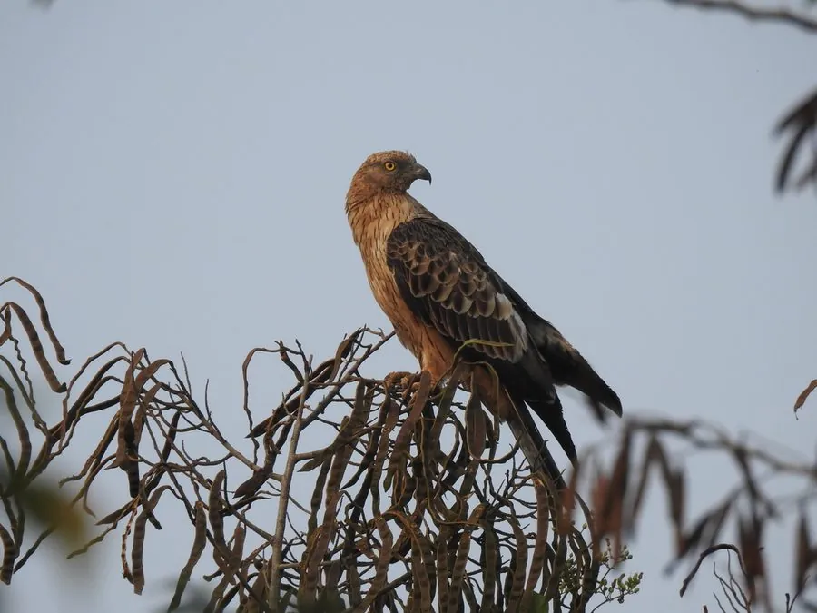

鸟类 · 动物界
凤头蜂鹰 Pernis ptilorhynchus

亚洲的迁徙性猛禽，头小而颈长、头后有短冠羽，脸形似鸽子，专门挖掘蜂巢取食蜂蛹和蜂蜜，羽色变化多端。
- 分类
- 门脊索动物门纲鸟纲目鹰形目科鹰科属蜂鹰属
- 栖息环境
- 森林、林缘、农田与山地
- 地理分布
- 繁殖于西伯利亚、中国东北和日本，冬季迁徙至东南亚、南亚和中国南方
- 保护级别
- IUCN 无危（LC）；中国国家二级保护动物
物种志
凤头蜂鹰体长 50–62 厘米，翼展 115–145 厘米，体重 0.75–1.5 千克。它的头小而颈长，头后有短冠羽，脸形像鸽子，喙细弱；羽色变化很大，从浅褐、深褐到黑色都有，尾羽有 3–4 条深色横带。
凤头蜂鹰繁殖于西伯利亚、中国东北和日本，冬季迁徙到东南亚、南亚和中国南方。它栖息在森林、林缘和农田，以蜂类幼虫、蜂蛹、蜂蜜为食，也吃蛙、蜥蜴和小型鸟类。凤头蜂鹰善于跟踪蜂群找到蜂巢，再用爪子扒开蜂巢取食，脸部羽毛紧密，能抵御蜂蜇。雌鸟每窝产 2 枚卵，孵化约 30–35 天。凤头蜂鹰被列为无危，在中国属于国家二级保护动物。
形态与习性
- 食性蜂蛹、蜂类幼虫、蜂蜜与小型动物
- 体长50–62 cm
- 翼展115–145 cm
- 体重0.75–1.5 kg
- 繁殖每窝 2 枚卵，孵化约 30–35 天
- 特征头小而颈长，脸形似鸽
趣味知识
- 凤头蜂鹰专门挖掘蜂巢，取食蜂蛹和蜂蜜。
- 它的脸形像鸽子，脸部羽毛紧密，能抵御蜂蜇。
- 凤头蜂鹰是长距离迁徙的猛禽，冬季飞往东南亚。